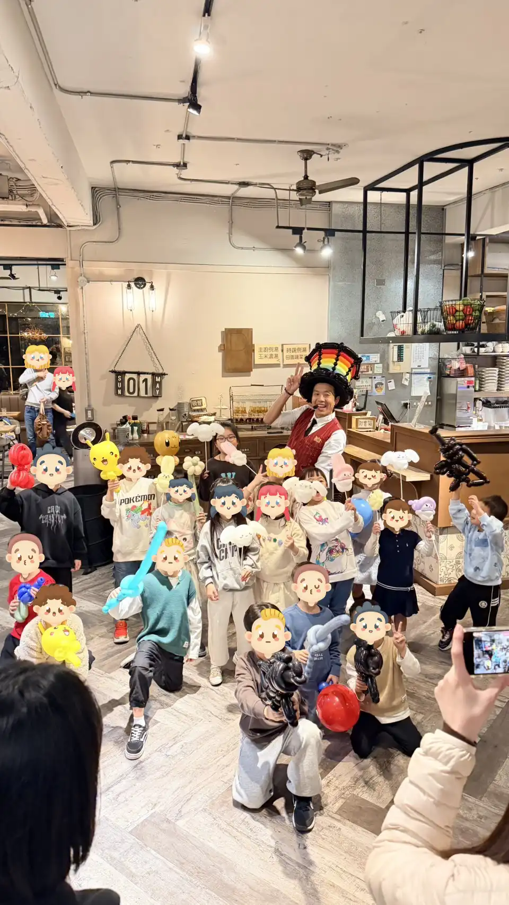

土城氣球表演推薦｜鹿角公園二年級結業式氣球魔術派對紀錄
寒假最棒的開場！土城親子餐廳派對表演首選，讓孩子帶走滿滿歡笑
📍 地點：鹿角公園 Antler Park (新北市土城區員林街7號)
今天是一場很有意義的結業式派對演出。氣球大叔 Sony 來到位於土城的 鹿角公園 (Antler Park)，為剛完成學期挑戰的二年級孩子們，送上一份最歡樂的寒假開場禮物。

為什麼「結業式」超適合安排氣球魔術表演？
- 孩子專注力集中：專業魔術節奏能瞬間抓住全場注意力，讓老師與家長更輕鬆。
- 儀式感十足：結束時每位孩子都能領取造型氣球，帶著成就感與歡笑回家。
- 專業服務：大叔提供土城、板橋、中永和及新莊等地區派對預約，經驗豐富。
表演過程中，孩子們對於近距離魔術展現了無比的好奇心。大叔現場快速製作各式造型氣球，包含寶可夢皮卡丘、帥氣寶劍、可愛動物等人氣款式，讓鹿角公園的用餐空間瞬間轉變為充滿笑聲的夢幻派對現場。

"Sony 老師的表演非常有渲染力，原本擔心二年級的孩子會坐不住，結果每個人都看得超入迷，最後拿氣球時更是全場最高潮！"
土城結業式 / 生日派對 / 親子餐廳包場，想要現場嗨、好控場、孩子有得拿有得玩 → 交給氣球大叔 Sony 就對了！
🎈 正在尋找土城氣球表演嗎？
如果您也希望為您的活動創造像現場一樣爆棚的人氣與驚喜，氣球大叔 Sony 是您的首選！我們專注於提供高品質的互動演出與情境佈置：
- 百貨商場活動：中庭舞台秀、假日聚客、週年慶造勢。
- 品牌行銷推廣：新品發表會、門市開幕、VIP 客戶派對。
- 親子家庭日：企業家庭日、社區晚會、私人慶生派對。
📅 本文整理於 2026-01-17，完整紀錄真實活動現場氛圍。